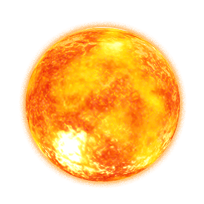
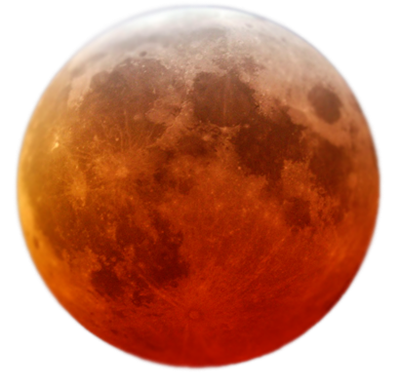
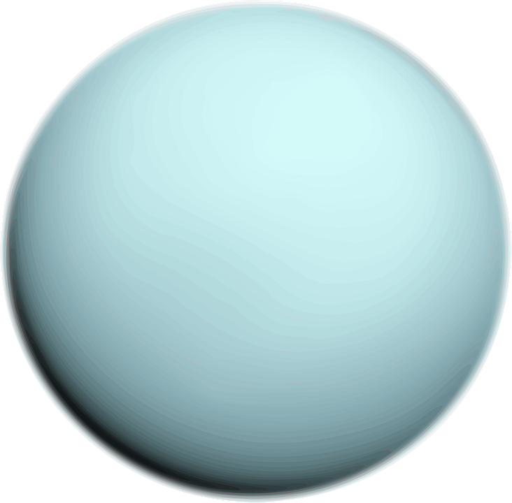

SOL
El Sol es una estrella de tipo-G de la secuencia principal y clase de luminosidad V que se encuentra en el centro del sistema solar y constituye la mayor fuente de radiación electromagnética de este sistema planetario
Distancia a la Tierra: 149,6 millones de km.
Masa relativa a la de la Tierra: 332 946X.
Distancia media desde la Tierra: 149 597 870 700 m (~ 1,5 × 1011 m).
Temperatura efectiva de la superficie: 5778 K (5505 C)
Densidad relativa a la de la Tierra: 0,26x
Temperatura del núcleo: ~ 1,36 × 106 K
Jupiter
 Júpiter es el quinto planeta del sistema solar. Forma parte de los denominados planetas exteriores o gaseosos. Recibe su nombre del dios romano Júpiter. Se trata del planeta que ofrece un mayor brillo a lo largo del año dependiendo de su fase.
Júpiter es el quinto planeta del sistema solar. Forma parte de los denominados planetas exteriores o gaseosos. Recibe su nombre del dios romano Júpiter. Se trata del planeta que ofrece un mayor brillo a lo largo del año dependiendo de su fase.
Distancia desde el Sol:778,5 millones km.
Radio:9.911 km.
Duración del día:0d 9h 56m.
Gravedad:24,79 m/s²
Masa:1,898 × 10^27 kg (317,8 M⊕)
Satélites::Europa, Ganimedes, Ío, Calisto, S/2003 J 2, Adrastea, Calé,...
Mercurio
 Mercurio es el planeta del sistema solar más próximo al Sol y el más pequeño. Forma parte de los denominados planetas interiores o terrestres y carece de satélites naturales al igual que Venus.
Mercurio es el planeta del sistema solar más próximo al Sol y el más pequeño. Forma parte de los denominados planetas interiores o terrestres y carece de satélites naturales al igual que Venus.
Distancia desde el Sol: 57,91 millones km.
Radio: 2.440 km.
Duración del día: 58d 15h 30m².
Gravedad: 3,7 m/s².
Masa:3,285 × 10^23 kg (0,055 M⊕).
Satélites:Ninguno
Venus
 Venus es el segundo planeta del sistema solar en orden de distancia desde el Sol, el sexto en cuanto a tamaño, ordenados de mayor a menor. Al igual que Mercurio, carece de satélites naturales.
Venus es el segundo planeta del sistema solar en orden de distancia desde el Sol, el sexto en cuanto a tamaño, ordenados de mayor a menor. Al igual que Mercurio, carece de satélites naturales.
Distancia desde el Sol: 108,2 millones km.
Radio: 6.052 km.
Duración del día: 116d 18h 0m.
Gravedad: 8,87 m/s².
Superficie: 460,2 millones km².
Satélites:Ninguno
Marte
Marte es el cuarto planeta en orden de distancia al Sol y el segundo más pequeño del sistema solar, después de Mercurio.
Distancia desde el Sol: 227,9 millones km.
Radio: 3.390 km.
Periodo de rotación: 24,6229 horas.
Gravedad: 3,711 m/s².
Masa: 6,39 × 10^23 kg (0,107 M⊕).
Satélites: Fobos, Deimos.
Tierra
La Tierra es un planeta del sistema solar que gira alrededor de su estrella —el Sol— en la tercera órbita más interna. Es el más denso y el quinto mayor de los ocho planetas del sistema solar. También es el mayor de los cuatro terrestres o rocosos.
Distancia desde el Sol:149,6 millones km.
Radio:6.371 km.
Superficie: 510,1 millones km²
Gravedad: 9,80665 m/s².
Masa:5,972 × 10^24 kg.
Satélites:Luna
Saturno
Saturno es el sexto planeta del sistema solar, el segundo en tamaño y masa después de Júpiter y el único con un sistema de anillos visible desde nuestro planeta. Su nombre proviene del dios romano Saturno.
Distancia desde el Sol:1,429 miles de millones km.
Radio:58.232 km.
Duración del día:0d 10h 42m.
Gravedad: 10,44 m/s².
Masa: 5,683 × 10^26 kg (95,16 M⊕)
Satélites:Titán, Encélado, Mimas, Jápeto, Dione, Rea, Tetis, Tarqeq, ...
Urano
Urano es el séptimo planeta del sistema solar, el tercero de mayor tamaño, y el cuarto más masivo. Se llama así en honor de la divinidad griega del cielo Urano, el padre de Crono y el abuelo de Zeus.
Distancia desde el Sol:2,871 miles de millones km.
Radio:25.362 km.
Duración del día:0d 17h 14m.
Gravedad: 8,69 m/s².
Satélites: Titania, Miranda, Umbriel, Ariel, Oberón, Trínculo, Margarita, ...
Neptuno
 Neptuno es el octavo planeta en distancia respecto al Sol y el más lejano del sistema solar. Forma parte de los denominados planetas exteriores o gigantes gaseosos, y es el primero que fue descubierto gracias a predicciones matemáticas.
Neptuno es el octavo planeta en distancia respecto al Sol y el más lejano del sistema solar. Forma parte de los denominados planetas exteriores o gigantes gaseosos, y es el primero que fue descubierto gracias a predicciones matemáticas.
Distancia desde el Sol: 4,498 miles de millones km.
Radio:24.622 km.
Duración del día:0d 16h 6m.
Satélites: Tritón, Laomedeia, S/2004 N 1, Proteo, Nereida, Halimede, Despina, Galatea, Sao, Náyade, Psámate, Talasa, Neso, Larisa